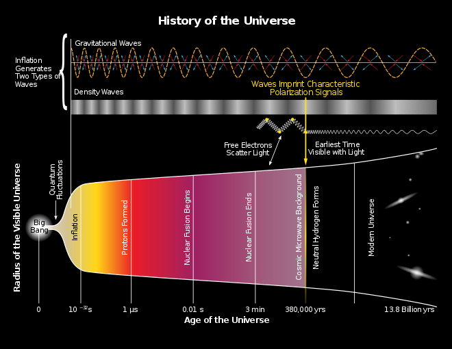
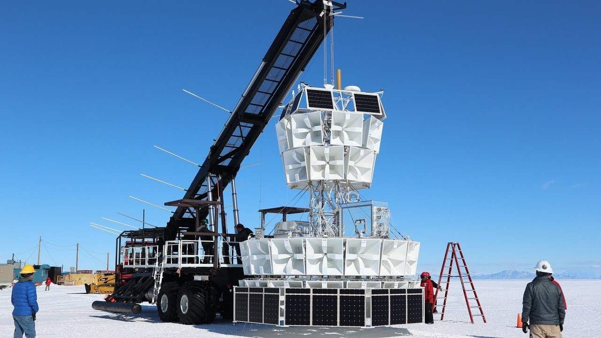

“If a coin comes down heads, that means that the possibility of its coming down tails has collapsed. Until that moment the two possibilities were equal. But on another world, it does come down tails. And when that happens, the two worlds split apart.”
― Philip Pullman, The Golden Compass
At The Beginning of Time
According to the cyclic model of the universe, the big bang itself wasn’t the very beginning. There was a very different phase of the universe that occurred previously to set up and give rise to the Big Bang. This is called cosmological inflation. When and where inflation ends, a Big Bang occurs.

Time runs Backward
A few years ago, there was a lot of media coverage of a NASA scientist detecting a parallel universe. And in general, this is what they claim.
“At the moment of the Big Bang two universes were formed – ours, and another one that from our perspective is running in reverse.”
The idea of parallel universes sparks our wildest dreams. If there are other universes where certain events had different outcomes—where just one crucial decision went a different way—perhaps there could be some way to access them. We could possibly live in a universe that is superior to our own in some ways if particles, fields, or even individuals could be transported from one to the other. These ideas have a foothold in theoretical physics as well, from the myriad of possible outcomes from quantum mechanics as well as ideas of the multiverse. Parallel universes are one of those intriguing ideas that sound imaginative but are very difficult to test. After all, we’re stuck in our own universe, and maybe there’s no way to test this idea about parallel universes. Because in all the experiments that scientists have ever performed, they’ve never found any strange interactions that require something outside of the governing physics to explain. For example, particles don’t simply appear, disappear, or transform. They can only interact with other quanta of matter and energy. We live in a universe that is governed by the law of physics. So, every interaction of particles must be uniformly governed by the same law.
There’s actually a link between this example and the media hype on the evidence of parallel universes. It appears that the claim about the evidence for parallel universes started from an article posted by New Scientist.
In all fairness, the post is backed up by a thought-provoking article about some puzzling results from an experiment conducted in Antarctica. So before we go any deeper, let’s first understand how the whole experiment works.
In all fairness, the post is backed up by a thought-provoking article about some puzzling results from an experiment conducted in Antarctica. So before we go any deeper, let’s first understand how the whole experiment works.
Helium Balloon Experiment and ANITA
The Antarctic Impulsive Transient Antenna (ANITA) conducted a long-term helium balloon experiment. It is designed to detect radio signals generated by ultra-high energy neutrinos and cosmic rays. This helium balloon is flying over Antarctica, at a height of thirty-seven thousand meters.

Neutrinos, which are subatomic particles similar to electrons, have no electrical charge and are sometimes considered massless. These particles are abundant in the universe, and they are very hard to detect. Even now, scientists have estimated that millions of neutrinos are passing through every square centimetre of our skin, without leaving any clue. The main source of Neutrinos are stars and in our case, it is the Sun.
But when a very high energy neutrino particle passes through matter, they do interact with the matter and their interaction generates radio waves. If we can detect these radio waves, we can tell what kind of neutrino interaction it was, and through the direction of those radio waves, we can find where those neutrinos were coming from.
In 2016, ANITA made a very strange discovery. Usually, when neutrinos are detected, they come from outer space, because that is where the source lies. But, during ANITA’s flight in 2016, it detected Neutrinos that were not coming from space. Instead, it was coming from Earth. A neutrino can pass through Earth without interacting with it, but when it comes to high-energy neutrinos, they do interact with matter. During their collision with atoms, they produce some particles and radio waves. So, if highly energetic neutrinos do pass through the earth, they would interact with the Earth and generate radio waves. But the problem was that ANITA couldn’t detect those radio waves.
In Antarctica, where the ANITA experiment is being performed there is also another experimental setup that can detect neutrinos coming from the earth. This experimental setup is known as the IceCube Neutrino Observatory run by CERN. If some high-energy neutrinos pass through the earth, they can be detected through this observatory. But ANITA’s detection of these neutrinos the ground-based experimental setup didn’t detect any of them. This is impossible as far as scientists think but the helium balloon did this.
How can some neutrinos pass through the Earth and reach ANITA without being noticed by IceCube observatory?
Even if we ignore this, then one of the possibilities is that there is some neutrino source on the other side of the earth, and it could be that these neutrinos came from that source. However, scientists believe that this hypothesis is incorrect. Because no known source can emit lots of high-energy neutrinos, which can pass through the earth and be detected through ANITA.
Our Possible Explanation
Our current understanding of the universe is not able to explain this weird phenomenon yet. So, we need to introduce some new physics to explain this. One of the possible explanations published in NewScientistcaught attention worldwide. According to them
“Explaining this signal requires the existence of a topsy-turvy universe created in the same big bang as our own and existing in parallel with it. In this mirror world, positive is negative, left is right and time runs backward.”
If that kind of universe does exist, which is dominated by anti-matter and somehow connected to ours, then that behavior of Neutrinos can be explained as moving backward in time. But when the scientists checked out all the data and did some math on it, it made the least possible explanation for the strange behavior of neutrinos.
Looking at the bigger picture, the problems facing the picture of our universe are not limited to what humans can perceive. The advancement of science, our mind, and our thinking condition the way we explore the universe and because of this, it may be that we have some kind of blind spot for the cosmic phenomena that run counter to human intuition and understanding.
“The Universe is under no obligation to make sense to you.” ~ Neil deGrasse Tyson
The idea of a parallel universe is super exciting. However, in this scenario, we haven’t found any parallel universes. So for now, based on scientific evidence, the idea that we have parallel universes will have to remain in science fiction dreams.